LIMAPacific cliffs, world-class plates, and a city that is more than a gateway.
Miraflores ocean light, Barranco murals, Love Park mosaics, Huaca Pucllana adobe in the middle of the city, and the smell of pollo a la brasa when the day finally slows down.
3Days
12+Miles walked
~8Places that stuck
Not just a stopover. The coast is the story.
Lima surprised me at every turn. This sprawling Pacific capital is so much more than a gateway to Machu Picchu — Barranco color, Miraflores cliffs, a pre-Columbian pyramid in the neighborhood, and a food scene that has quietly conquered the globe. Three days is a first draft of a city built to be walked along the malecón and eaten through.
Where I actually walked.
Every tagged stop is on the map. All pins shows them together — tap a name to zoom in. Each popup opens the same place in Google Maps.
Colonial baroque plus catacombs. Guided tours only for the underground. Yellow facade is the photo; the bones are the story.
Guided ticket
🍽️ Top restaurants
Lima’s fine dining sells out. If you want Central, Maido, or similar, reserve weeks or months ahead — not the night before.
Reserve
🤍 No reservation
Malecón walks, Love Park, Barranco murals, Larcomar views. Show up early for soft light on the cliffs.
Walk up
🍋 Ceviche
Raw fish cured in citrus, chili, onions. Lunch tradition — many places stop serving late afternoon. Order early.
S/ 30–60
🥔 Causa
Layered potato terrine with avocado, chicken, or seafood. Cold, bright, and very Limeño.
S/ 20–40
🍗 Pollo a la brasa
Peru’s rotisserie chicken — crispy skin, aji verde, fries. Comfort food that locals and visitors argue about by brand.
S/ 25–45
🍸 Pisco sour
National cocktail — pisco, lime, egg white, bitters. One at a Barranco bar after the murals.
S/ 20–35
🌽 Anticuchos & street snacks
Skewered heart, choclo, emoliente carts. Ask a local stall, not a hotel lobby.
S/ 8–20
☕ Coffee & dessert
Peruvian beans, lucuma ice cream, suspiro. Soft landing after a cliff walk.
S/ 10–25
📅 When to book
December–March (sunny season) fills first. Garúa months are easier on rates. Book Miraflores or Barranco early if you want walkable coast.
📍 Where
Miraflores — malecón, parks, restaurants, safest first stay. Barranco — artsy nights, shorter walk to murals. San Isidro — quieter, business-hotel energy. Historic Center is atmospheric but plan evenings carefully.
💵 Spend less
Skip ocean-view premiums if the malecón is two blocks away. Uber between Barranco and Miraflores is cheap; a mid-rise near parks beats a lobby you will Instagram once.
☀️ Summer (Dec–Mar)
22–29°C, warmer, sunnier, beach energy. Peak for outdoor dining and cliff walks. Higher rates; Limeños vacation in January.
🌫️ Winter / garúa (May–Nov)
14–19°C, coastal fog, grey skies, drizzle that rarely becomes real rain. Cooler, never freezing. Fine for food and museums; softer light for Barranco.
🌸 Shoulder (Apr, Nov)
18–24°C transitional weather. April still has sun; November fog lifting. Moderate prices and a good compromise.
🍽️ Food year-round
Culinary scene does not wait for blue skies. Mistura and restaurant weeks spike demand — book top tables early whenever you come.
🚶 Walk Miraflores / Barranco
Malecón parks, Love Park, Larcomar, Barranco murals — this is a walking coast. Comfortable shoes for cliffs and cobbles.
Free
🚕 Uber
Reliable for airport, Historic Center, and evening hops. Safer and clearer than street taxis for most visitors.
App
🚌 Metropolitano
BRT spine through the city. Useful if you learn a few stations; not as tourist-simple as a European metro.
Card / fare
🚲 Bike the malecón
Cycle paths along Miraflores cliffs. Rent for a sunny hour; foggy winter mornings are less fun.
Rental
✈️ Airport (LIM)
Jorge Chávez — Uber or official transfer. Traffic is real; pad time for flights out to Cusco.
Transfer
Select your citizenship
Usually a Peruvian visa — or a conditional exemption. Indian ordinary-passport holders typically need a tourist visa unless they qualify for Peru’s exemption (valid US/UK/Canada/Australia/Schengen visa with enough remaining validity, or permanent residence in those places). Always verify with Migraciones Perú / the Peruvian consulate before you fly.
Where are you currently residing?
📅 Tourist visa (if no exemption)
WhatPeruvian tourist visa via a Peruvian consulate (e.g. New Delhi)
StayAuthorized length is set at entry — often up to ~180 days in a year for tourism categories; officer decides
ProcessingOften about 7–10 working days after interview — confirm locally
ApplyStart at least 15 days before travel; earlier is safer
🪪 Conditional visa-free?
Valid visa from USA, UK, Canada, Australia, or Schengen with typically 6+ months remaining at entry
Or permanent residence in those countries/areas
Airlines may interpret Timatic differently — print official guidance
Transit rules can differ from entry rules — check your routing
📄 Typical documents
Passport valid 6+ months
Visa application (DGC-005) if applying
Photos, itinerary, lodging proof
Funds / employment / ties evidence
Return or onward ticket
💡 Pro tips
Confirm with the Embassy of Peru / Migraciones Perú — not a blog comment
Carry printed exemption proof if you rely on a US/Schengen visa
Boarding denial can happen even when entry rules look clear
TAM / Andean migration card processes change — follow current airport instructions
Important: General guidance only. Fees, exemptions, and document lists change. Verify on consulado.pe / Migraciones Perú before you book nonrefundable tickets.
Often visa-free for short tourism if your US visa qualifies. Indian nationals with a valid US visa (commonly needing ~6 months remaining validity at entry) or US permanent residence are frequently exempt from a separate Peruvian tourist visa. H-1B/H-4/OPT holders usually rely on the valid US visa stamp/status — still verify Migraciones Perú and your airline before departure.
✈️ Typical exemption path
VisaOften no Peruvian visa if US (or other listed) visa meets the minimum remaining validity
StayUp to ~180 days/year tourism categories are commonly cited; entry officer decides
StatusKeep H-1B/H-4/OPT (or other) valid for the whole trip and for US re-entry
🪪 Carry anyway
Indian passport
Valid US visa stamp / green card if applicable
I-797 / EAD as relevant
Return ticket to the US
Lodging proof and sufficient funds evidence
📄 If exemption does not apply
Apply for a Peruvian tourist visa at a consulate with jurisdiction over your US state
Do not assume every US visa category qualifies — confirm
Student/short visas are sometimes treated more strictly than travel/business visas
💡 Tips
Screenshot or print the official exemption language for airline desks
US re-entry needs a valid US visa/stamp — Peru does not fix that
Pad LIM connection time if continuing to Cusco the same day
Rules change — Migraciones Perú is the source of truth
Important: Status and exemption questions are individual. When in doubt, check Migraciones Perú / the Peruvian consulate and your airline — not a comment thread.
No visa required for tourism. US citizens can typically visit Peru visa-free for short tourism stays. Authorized length is set at entry.
✈️ Visa-free entry
VisaNone for ordinary tourism (confirm current MFA matrix)
PassportValid; 6 months remaining is a common airline/consular expectation
PurposeTourism, short visits — not work
🛂 Entry checklist
Valid US passport
Return / onward ticket
Proof of accommodation
Sufficient funds for the stay
Follow current TAM / arrival form instructions
💡 Travel tips
Peak Dec–Mar spikes hotels in Miraflores
If you continue to another country, that leg needs its own documents
Altitude plans for Cusco are a health question, not a visa one
📍 Local note
LIM is the usual gateway. Know whether your next flight is domestic to Cusco — different terminal timing and bag rules.
Note: Visa-free still means immigration rules. Check travel.state.gov / Migraciones Perú for the latest stay limits and entry forms.
What stayed on the roll.
Eight chapters from the coast — bikes on city streets, a lighthouse, Love Park mosaics, Barranco walls, Larcomar cliffs, pollo a la brasa, Pacific overlooks, and adobe at Huaca Pucllana.
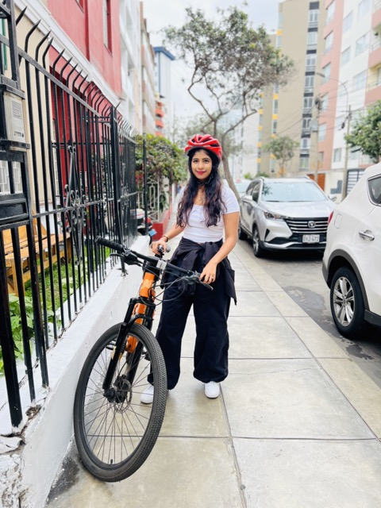
01 / 01
01 / 08
Cycling the streets
Exploring Lima on two wheels was the perfect way to feel the city’s rhythm. From busy neighborhoods to quiet coastal paths, cycling revealed corners you only get at street level.
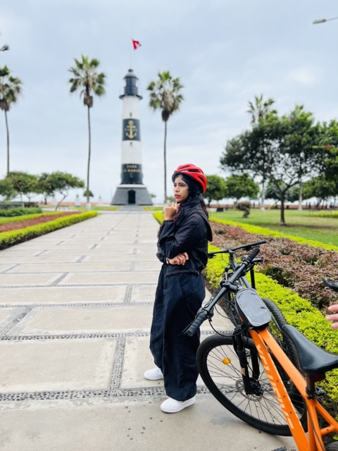
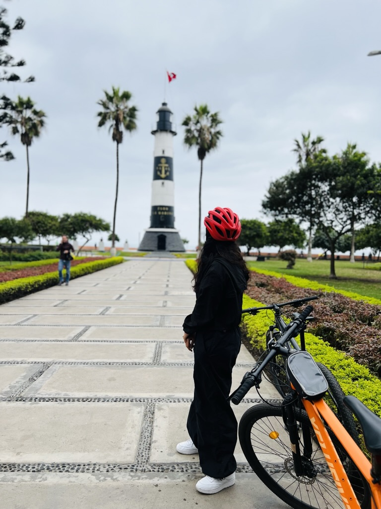
01 / 02
02 / 08
La Marina Lighthouse
Faro La Marina stands as a beacon on the malecón — Pacific horizon, cliff edge, and a clean stop for watching Lima’s light change.
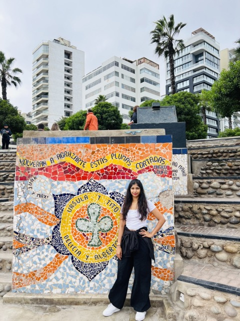
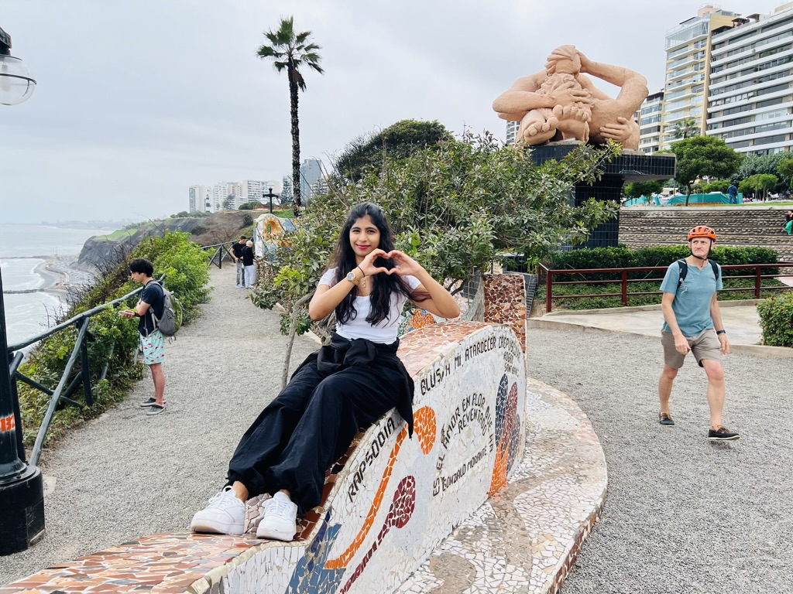
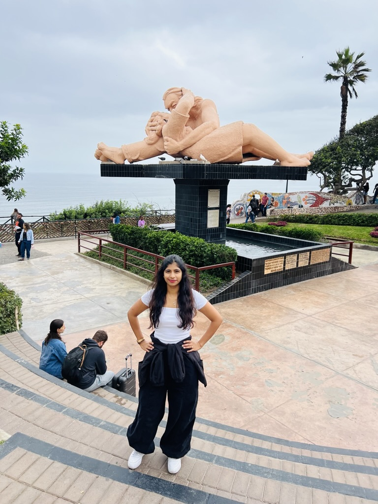
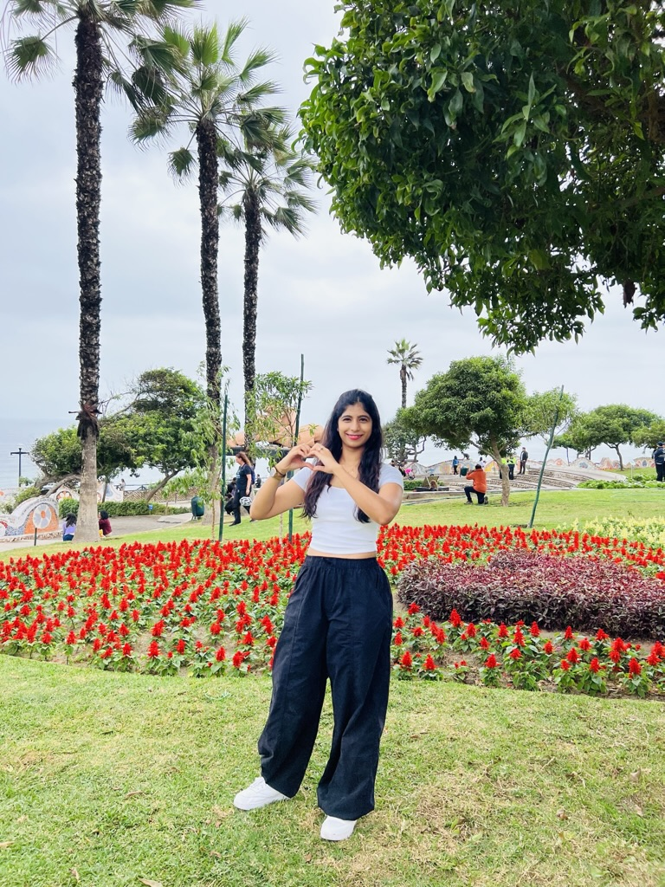
01 / 04
03 / 08
Love Park
Parque del Amor in Miraflores — El Beso, colorful mosaics, cliff-top Pacific. Locals and visitors share the same sunset rail. Romantic without needing a script.
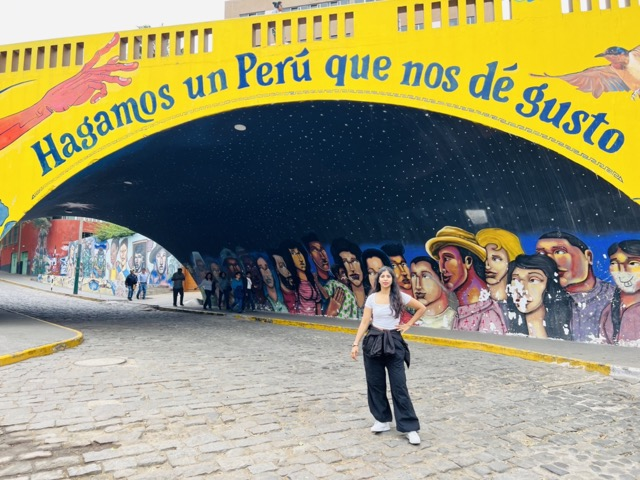
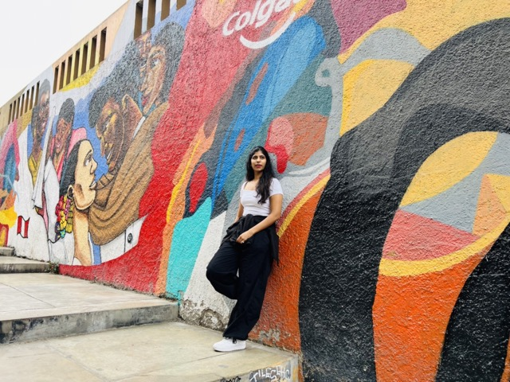
01 / 02
04 / 08
Barranco street art
Barranco’s bohemian streets are an open-air gallery — traditional motifs and contemporary color on every wall. Walk slow. The neighborhood rewards looking up.
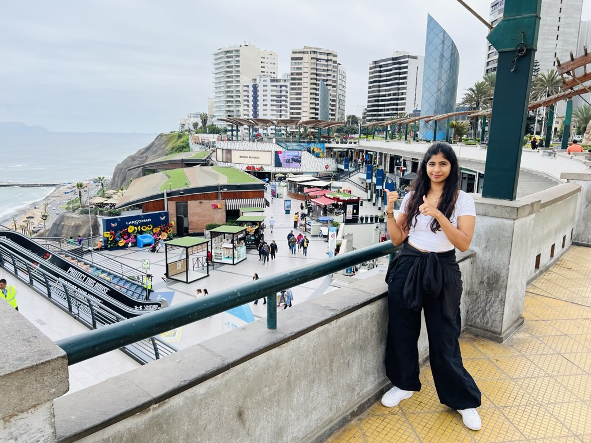
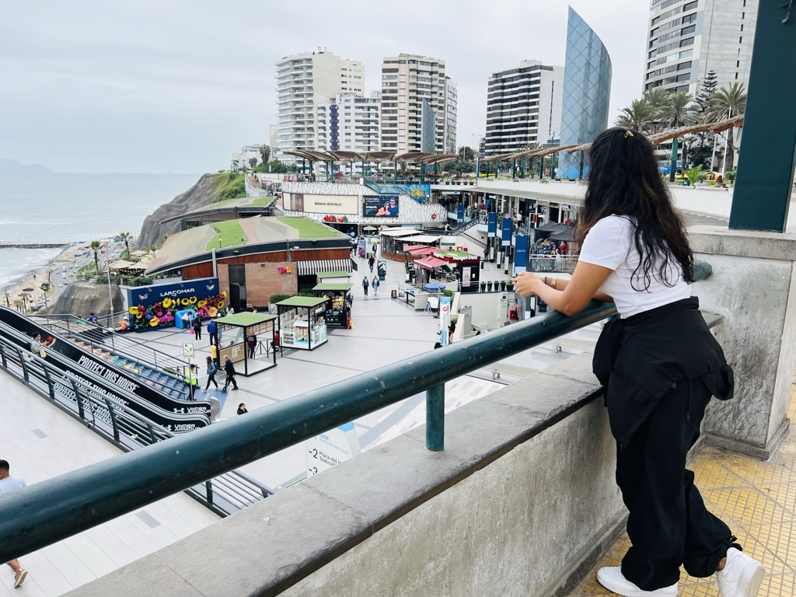
01 / 02
05 / 08
Larcomar
A shopping center built into the cliff face — Pacific views while you shop or dine. Modern Lima stacked against old geology. Touristy and still worth the overlook.
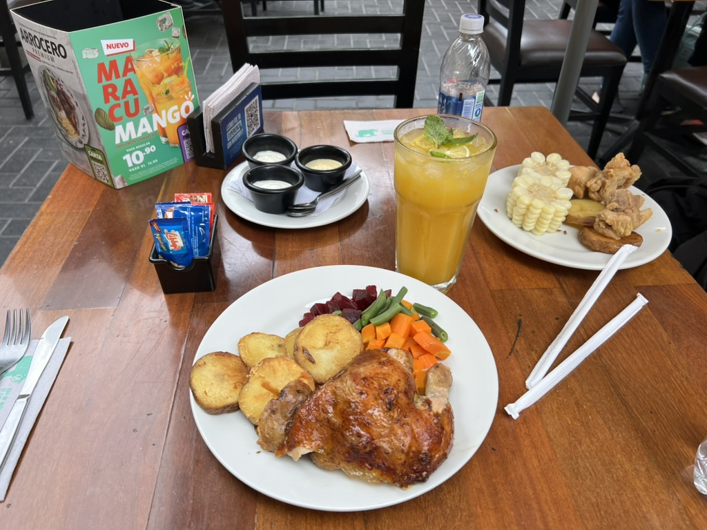
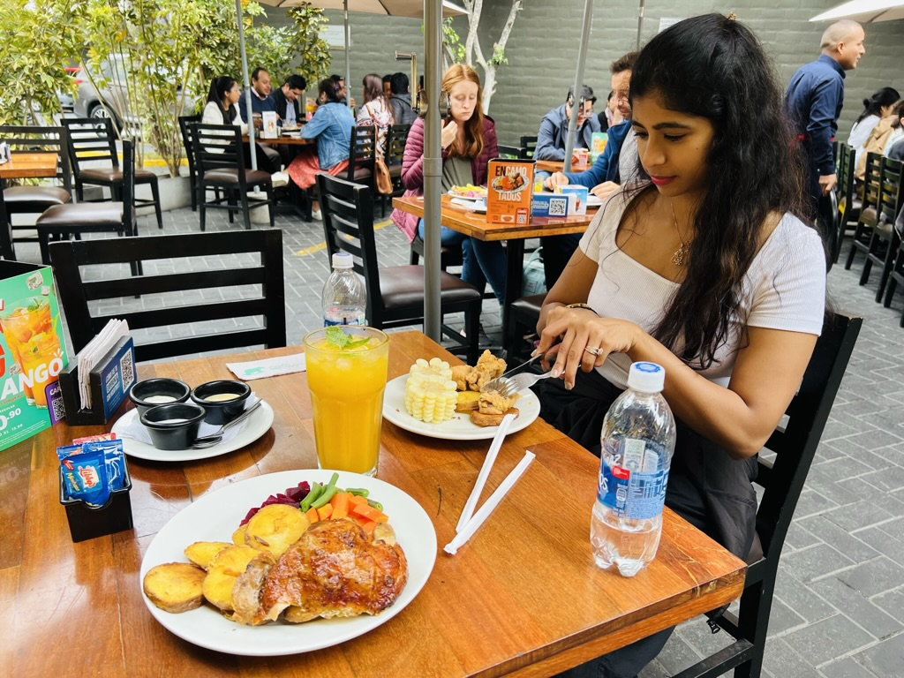
01 / 02
06 / 08
Pollo a la brasa
Peru’s national comfort plate — crispy skin, juicy meat, aji verde. After museums and cliffs, this is the meal that feels like the city exhaling.
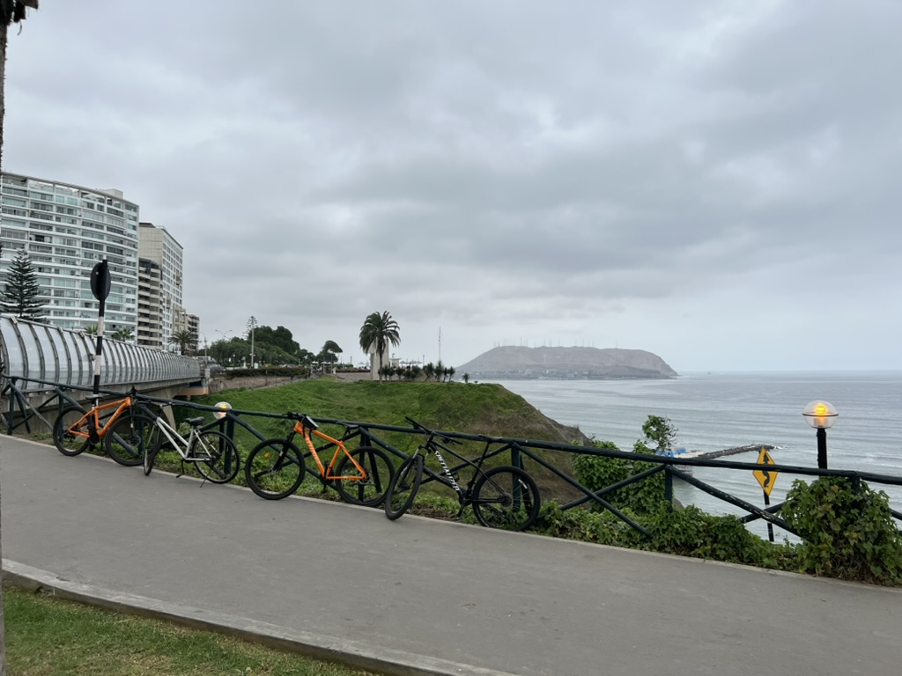
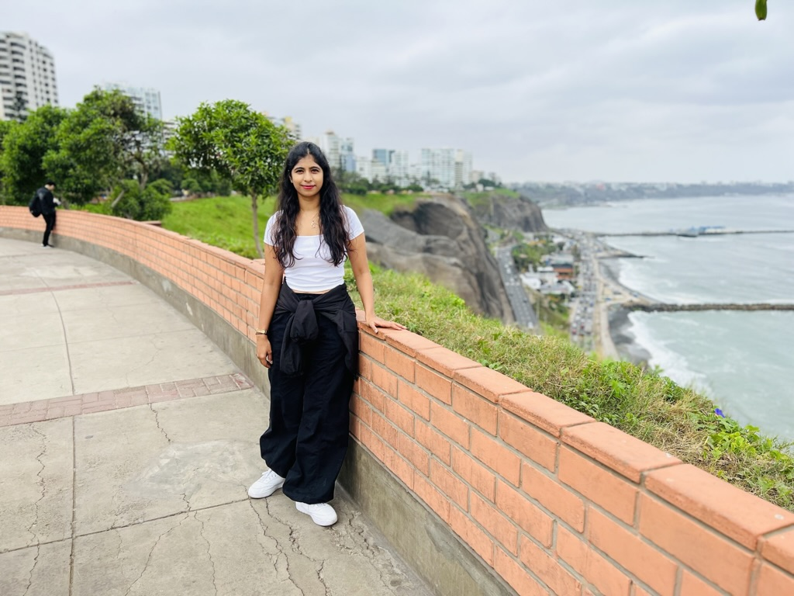
01 / 02
07 / 08
Miraflores ocean
Dramatic cliffs, surfers below, Pacific that never stops. Watching waves from the malecón is half the reason to stay in Miraflores instead of treating Lima as a layover.
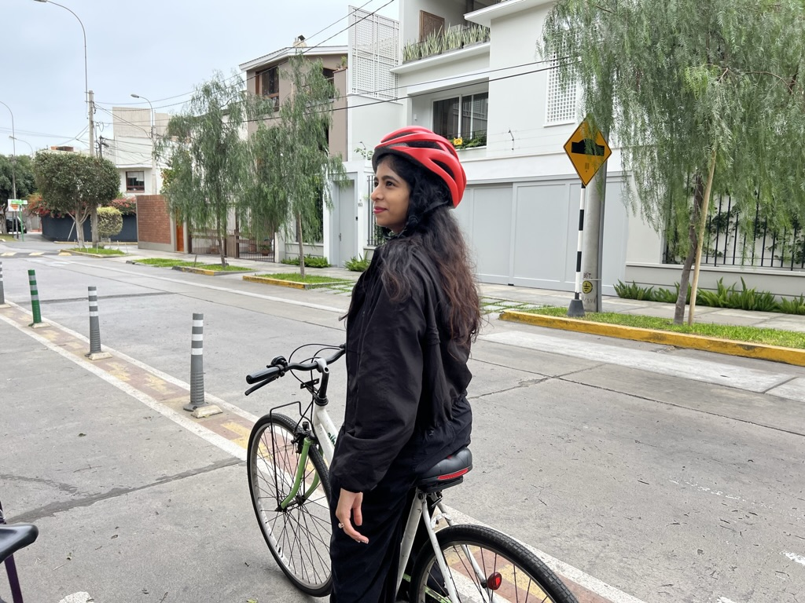
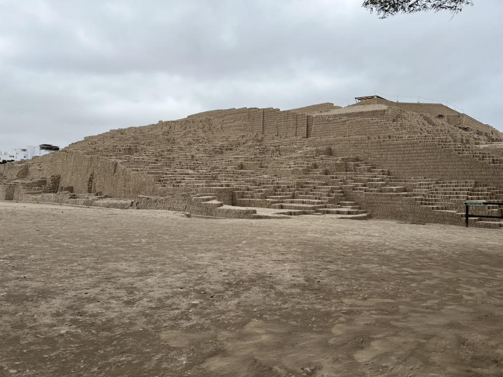
01 / 02
08 / 08
Huaca Pucllana
A pre-Columbian adobe pyramid in the middle of modern Miraflores — more than a thousand years of city underneath the traffic. History you can touch before dinner.
Still on the list.
Three coastal days filled Miraflores and Barranco. These are the rooms and streets I still owe Lima.
🏛️ Historic Center, slower
I skimmed Plaza Mayor. The balconies and churches deserve a morning without a Cusco flight clock running.
Morning
🏺 Larco Museum
The pre-Columbian collection and garden restaurant are unfinished business before the Andes.